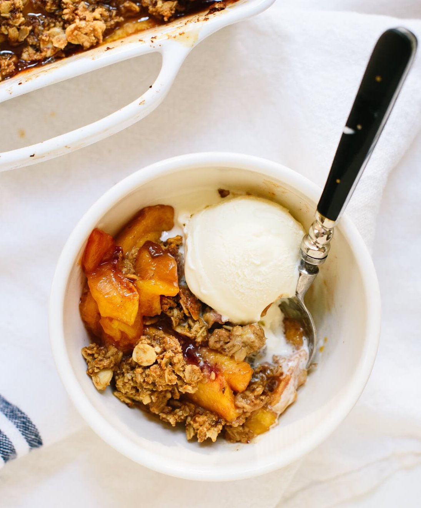

Gluten-Free Peach Crisp

This healthier peach crisp features juicy summer peaches and a delicious oat
and almond topping.
Recipe
Total time: 50 min | Yield: 8 servings
Ingredients
Peach filling:
- 2 1/4 lbs ripe peaches, peeled and thinly sliced (about 5 to 6 peaches)
- 2 tbs arrowroot starch or cornstarch
- 1 tsp vanilla extract
- 1/2 tsp ground cinnamon
Crisp topping:
- 1 c old-fashioned oats (certified gluten free if necessary)
- 1/2 c almond meal or almond flour, lightly packed
- 1/3 c sliced almonds
- 1/3 c packed coconut sugar or brown sugar
- 1 tsp ground ginger
- 1/4 tsp fine grain sea salt
- 4 tbs butter, melted
- 3-4 tbs plain yogurt
Instructions
- Preheat the oven to 350 degrees Fahrenheit.
- To prepare the filling: In a 9 by 9-inch baking
dish, mix together the sliced peaches, honey, arrowroot starch,
vanilla and cinnamon.
- To prepare the topping: In a medium mixing bowl, stir together
the oats, almond meal, sliced almonds, coconut sugar, ginger and salt.
Mix in the melted butter and yogurt. Stir until the mixture is moistened
throughout, adding up to 1 more tablespoon of yogurt if it seems dry.
- Dollop spoonfuls of the oat mixture over the filling and use your fingers
to break up the mixture until it is evenly distributed (no need to pack it
down). Bake for about 30 minutes, or until the filling is bubbling around
the edges and the top is lightly golden.
- Let the crisp rest for 5 to 10 minutes before serving. Serve with a
scoop of vanilla ice cream or plain yogurt.